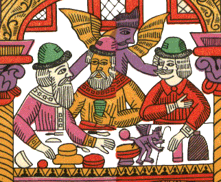
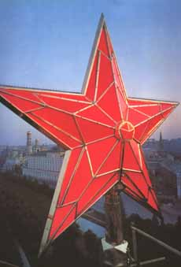

| НОВОСТИ | |
|---|---|
"У МОЕЙ ДЕВОЧКИ ЕСТЬ ОДНА МАЛЕНЬКАЯ ШТУЧКА" Л.У.Рьен АТИПИЧНЫЙ Папышев-Порно НОВЫЕ ВЯЛЫЕ ОТСОСАЛИ З.Поросенков ОБЪЯТИЯ ИХ - ТЕНЕТЫ Памперсов-Слюнявкин ВОЖДЕЛЕНИЕ ДЕЛЬ АРТЕ Семьпядей Волбухин СПАСЕНИЕ УТОПАЮЩИХ - ЛОВКОСТЬ РУК Внуки лейтенанта Шмидта С ХАОСОСОМ НЕ ШУТЯТ Алла Митрофанова | ВЫНОС СОРОСА ИЗ ИЗБЫ Дети капитана Гранта НА РОДИНУ ЗА НАГРАДОЙ Кирилл Мюллер АРТ-БУФЕТЪ-2 СОПЛИ И ВОПЛИ А.Г.Венецианов ОГОРАЖИВАНИЯ Любовь Усталая С ЖИРУ БЕСЯТСЯ Ложь К.Деготь  |
| ПРЕМИАЛЬНЫЕ |
|---|
|
 Как уже писал "Съ", премии за достижения в русской культуре последнее время принято присуждать заграничным авторам, преуспевшим в разного рода извращениях. Поэтому нет ничего удивительного в присуждение литературной премии "Национальный бестселлер" (лучше бы звучало "Нэйшыонал лучшепродажный") рижскому журналисту Гарросу за кровавый роман-расчлененку "(Голово)ломка". В статье "Бестселлером стала инструкция по расчленению" ("Коммерсантъ" 02.06) М.Трофименков описал церемонию вручения. "В прошлом году на "Национальном бестселлере" царила драматическая обстановка: корреспондент "Свободы" хлопал дверью так, что едва не сыпались стекла, А.Проханов патетически отдавал свой приз Э.Лимонову, кто-то из поэтов бить морду состоявшему в жюри корреспонденту "Ъ". На этот раз приз обмывали в обстановке скорее водевильной. Самый безобидный из соискателей Яременко-Толстой все время попадал впросак. Л.Данилкин аттестовал его "половым невропатом". Стоило робко приблизиться к угрюмому финалисту В.Дегтеву, книгу которого Данилкин назвал "патриотическим галлюцинозом", как бывший военный летчик дал ему гневную отповедь: "Мне бы не хотелось, чтобы вы трогали мои книги. Я же ваши не трогаю". Сексуальный маньяк и сторонник Русского национального единства в одной литературной берлоге не уживутся. Ангелом мщения в зале промелькнул сердитый православный священник, которого писатель вывел в романе под именем отца Агапита, велопедиста, пьяницы, бабника и, возможно, черного мага. Гости смогли оценить дальновидность организаторов, перенесших церемонию из "Астории" в "Европу". Охрана Дж.Буша в лучшем случае поставила бы всю литературную братию лицом к стене, руки на затылок". *** Журнал "Елль" и ОАО Альфабанк скинулись при поддержке Шуры Тимофеевсого и Татьяны Толстой на скромную премию (5000 у.е.США) для скромного труженика пера Аркадия Ипполитова, восславившего культурную столицу в оригинальном эссе "Городок в табакерке". "Съ" поздравляет премианта! Главвред. |
| ЗДЕСЬ МОГЛА БЫ БЫТЬ ВАША РЕКЛАМА | СКАНДАЛЬНЫЕ ХХХРОНИКИ |
|---|---|
КЕТЧУП С ЛИМОНОМ – МЕЧТА ХОЗЯЙКИ НЕУЖЕЛИ ВЫ УДАРИТЕ ЧЕЛОВЕКА В ОЧКАХ? ЖЕРТВА ДИЗОРИЕНТАЦИИ Некий молодой провинциал, начитавшись в “Художественном журнале”, о безобразиях, творимых актуалистами на московской арт-сцене, решил покорить столицу. Участвуя в мастерских для молодежи при ярмарке Арт-Москва, сей Растиньяк выложил изображениями пенисов слова “Христос Воскресе!”, полагая, что подобным образом принято проявлять хороший тон в среде продвинутой интеллигенции. Выскочку ждало жестокое разочарование: не успел он вкусить похвал кураторов, как ему начистил рыло проходивший мимо Богдан Мамонов из группы “Эскейп”. ДРАЧИ ПРИЛЕТЕЛИ
На 5 рок-фестивале в г. Ленинграде панк Свинья произнес страшную пророческую фразу: “Москвичи, х дрочи!” Через 15 лет они стартовали. По слухам, к юбилею в Питер ожидается некий московский радикал-мочепевец, избравший драчку художественным жестом. Велком!
|
| О ЮБИЛЕЕ | |
|---|---|
А.Ипполитов, названый Л.Лурье “самым авторитетным критиком” определил празднование 300-летия как “пышное, тупое, бесстыдное”. Предлагаем обзор событий прошедшего праздника и различных мнений о нем. СИЗИФОВ ТРУП
Многие художники воспользовались юбилеем, дабы осыпать город своими шедеврами. Особенно старалась неформальная группа “трехсотников”, остроумно решивших, что лучшим подарком будут выставки именно с трехстами произведениями. В группу вошли фотограф Молодковец, живописец Флоренский, концептуалист Козин и др. Но всех превзошел Олег Хвостов, еще в 2001 году решивший подарить любимому городу еще один “0”, написав 3000 автопортретов. Эти 900 дней и ночей превратились в один сплошной подвиг: за день надо было создавать в среднем по 3 своих портрета, что всякого нормального человека могло бы поставить на грань суицида. Этот самоотреченный нарциссизм трудно переоценить, ибо, когда галерея Борей распахнула свои казематы, покрытые от пола до потолка физиономией Хвостова, то там не было ни посетителей, ни самого автора: сравнить достоинства портретов с прелестью оригинала оказалось невозможным.
СЛИЗЕНЬ И СВОЛОЧЬ
Слизень – это живое существо города. Сам по себе слизень аморфен и многолик – это ювелир Ананов и Вова Сорокин, Гергиев и “АукцЫон”, Пиотровский и Хлобыстин. И вообще, что касается жителей, думаешь, что нет здесь никакого особого живого существа, потому что искони СПб населен сволочью. Екатерина говорила в указе об основании, скажем, какой-нибудь Луги: “Населить сей город надо всякой сволочью”. На самом деле – прислушайтесь – это очень красивое и сильное слово, и оно непосредственно относится к СПб. И если есть что-то, что нас, слизень и сволочь, здесь хранит, то это красота.
ДОИГРАЛИСЬ
Со времени своего основания, вплоть до 17 года Петербург был едва ли не самой интернациональной столицей мира. Восполнить утраченную гармонию решили художественные институции. В “Арт-Буфете” прошла вечеринка “Играем в евреев”, для которой Акт-Уганова собственноручно забила кашерной щукой дыру в бюджете. Русский музей поспешил ответить мероприятием “Сажаем итальянцев в России”. Толпа ряженных в гондольеров столичных хряков вышла на субботник в Михайловском саду, превратив бывшую детскую площадку в Вишневый Сад, больше напоминающий кладбище немецких оккупантов времен Великой Отечественной. Перед же Михайловского украсил поднявшийся бывший сортир, а ныне ресторан “Паркъ”. Приятного аппетита!
ПОДСЛАСТИЛ ЮБИЛЕЙ
По сообщению журнала “Итоги”, на юбилейном международном конкурсе “Съедобное искусство” победил японец Дайсуке Ногами вылепивший Венеру Милосскую в натуральную величину из белого шоколада.
МОСКОВСКИЙ КРЕМ
Исконно русское чувство красоты определяется одним словом – “бохато”. Это слово подразумевает полифоническую пестроту ярких красок, блеск позолоты и пышное, тортообразное цветение форм, что проявляется на всех уровнях: от храма Василия Блаженного до кооперативного ларька. К юбилею целый ряд самых известных архитектурных памятников СПб (как известно, города бедного) – Михайловский замок, Строгоновсий дворец, Московский вокзал, дворец Белосельских-Белоозерских и др., попытались приукрасить, сделав их облик богаче с помощью сладко–кремовой окраски фасадов.
|
ПОДВИГ ТВОЙ, ЭРМИТАЖ
Если “Петербургу быть пусту”, то наверняка его жители будут укрываться от последнего гибельного наводнения в Эрмитаже. Поскольку весь юбилей рассматривался большинством населения города как генеральная репетиция Конца Света, то Эрмитаж, со свойственной ему интеллигентностью, поспешил открыть народу круглосуточный бесплатный вход в свои залы, многозначительно сопровождая это показом фильма “Русский Ковчег” реж. Сокурова. Действительно, когда бахтинское миллионное людское море, в ожидании светопреставления скандировало “пи-дец!”, бушевало и испражнялось вокруг дворца, тысячи истинных петербуржцев укрылись в храме искусства, как это делали их предки, укрывавшиеся в храмах древнерусских городов от татаро-монгол. Отчаявшиеся добраться до дому люди спали на музейных банкетках и подъедали с газет припасенную снедь, приободряемые звуками джаз-банда, усиливавшего очевидные ассоциации с “Титаником”.
ВОЯЖ КОРЕННОГО МОСКВИЧА
На Московском вокзале меня встречал питерский приятель. На нем были дешевые ботинки. Я вышел, наконец, на Невский проспект. И сразу увидел большую надпись: “Шаверма”. И еще, и еще. Сколько хватало глаз, почти в каждом доме, на каждом углу была «Шаверма». Я спустился в метро. В вагоне двое парней у схемы метрополитена умирали от хохота: “Ты смотри, у них даже кольцевой линии нет!”. Я обрадовался – москвичи. Но москвичи вышли на следующей станции – “Маяковская”. Вестибюль был какой-то маленький и жалкий, совсем не такой, как на настоящей “Маяковской”. Я вышел из метро и стал читать вывески: “Кура”, “Яйцо”. Мне живо представились другие: “Книга”, “Продукт”. В окна кондитерских было видно, как люди покупают пирожные и сразу съедают их – сказывается блокадное прошлое. Зазвонил мой мобильный. - Только что освободился, - сказал приятель. – Пойдем скорей кофе пить. Место оказалось возле метро, рядом с каким-то собором – то ли Казанским, то ли Исакиевским. Цены: за кофе - 30 р., за пирожное - 29 р. Я заплатил, при виде счета сотрясаясь от внутреннего хохота. Мне было совершенно непонятно, чем же я еще займусь в этом полузаброшенном городе, ничем не похожем на нашу Москву. Пойдем мосты разводить, - сказал приятель. На той набережной все целуются, а на этой все писают, - пояснял он небрежно. Мост застыл, и кургузый корабль медленно высунулся с этой стороны. Приятель пошел по прямой-прямой, ужасно прямой улице – в свою коммунальную квартиру о двадцати комнатах. А утром поезд “Эр-200” отправился с Московского вокзала. Впереди у меня была правда, а не вымысел, шаурма вместо шавермы, бордюр вместо поребрика, подъезд вместо парадного, кофе за деньги, а не за гроши, и много кур вместо одной. Впереди были дома как дома: офисы и универсамы. Впереди была честная жизнь, а не эта иллюзия.
|
ВОТ ВАМ ТЕЛЕГРАММА ОТ ГИПОПОТАМА
Международный музыкальный фестиваль "SKIF" получил приветственную
телеграмму от Валентины Матвиенко,
в прошлом - комсомольского куратора Рок-клуба:
Такжальчтосергейбылснаминедолгоноегокороткуюжизньсопровождаламузыкапронизывалаеелучамисветаиэтотсветозарялнетолькосамогосергеяноивсехктоегозналмневыпалосчастьепознакомитьсяссергеемкурехинымвпорурасцветаленинградскогорокклубаслушаямузыкукурехинадосихпорнеперестаювосхищатьсянеординарностьюеготалантатакаямузыкапростонеможетникогооставитьравнодушнымэтовзрывэмоциймощнаяволназаставляющаяоткрыватьдругуюреальностьновэтихзвукахспрятанынетолькофантасмагориииныхмировздеськаквзеркалеотразиласьвсясутьпетербургаевропейскогокосмополитичногомятежногогородатольковпетербургемограскрытьсякомпозиторимузыканткурехиндаконечноегооченьлюбилиивдругихстранахнаконцертзнаменитостипоклонникиискалилишнийбилетиквкаждойстранегдекурехинвыступалсосвоимколлективомноразвемоглитамразличитьвэтихзвукахголоснашегогородаощутитьпульскаждойнотыдлянихпопмеханикапреждевсегошоудлянасэпохасвободызавораживающаявысотатворческойфантазииуленинградапетербургапериодаконца80хначала90хгармониякурехинаегоазартижаждановыхощущенийсвязьнеразрывнасегодняхочетсяещеразобернутьсяивглядетьсявтовремямузыканамдаеттакуювозможность.
| ПАСХАХАлия |
|---|
Известный искусствовед Екатерина Андреева, находясь на отдыхе в Греции, получила по мобильному телефону SМS сообщение от художника Александра Флоренского: “Христос Воскресе!”. Раба Божья Екатерина, обозревавшая поганое Парфеноново подворье, призадумалась: а не будет ли грехом отвечать по мобиле инородской “Воистину Воскресе!”, и дабы не впадать в срамное искушение, от риплаинга воздержалась, разговляясь “Метаксой”. В годовщину смерти Тимура Новикова, на Смоленское кладбище с некоторым опозданием явился его старый друг о. Иоанн Сотников в светском платье, состояние коего говорило о крайнем смирении священнослужителя в миру. Оглядев собрав шихся веселым ярым оком и воскликнув “перекомпозиция!”, отче облачился в рясу, также носившую следы усмирения плоти. Возгласом “Христос Воскресе!” он начал церемонию, выведя приунывшую толпу в бодрое состояние, соответствующее характеру поминаемого героя и светлому празднику Пасхи. Народов-отец |
ОБЩЕЖИТИЕ | |
|---|---|
|
ЧИСЛО ЗВЕРЯ ПУШКИНСКАЯ ОПУШИЛАСЬ Сад Парк бург
О.К. |
ОН НЕ БРОСАЕТ СЛОВ НА ВЕТЕР В распоряжение “Съ” попало неопубликованное интервью Георгия Гурьянова одному московскому изданию. Можно ли определить возраст человека по его творчеству?
Интервью вела Л.Новикова
|
| Русскими историками установлена прижизненная должность Ивана Сусанина - "ведущiй спецiалистъ" |
|---|